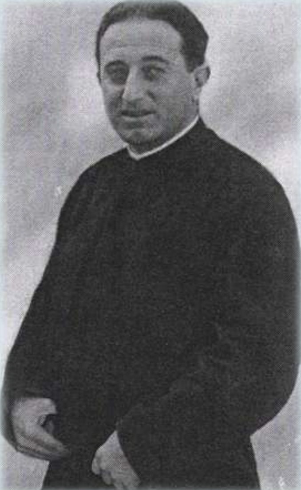

Martirio y Testimonio de Fe

En julio de 1936, al estallar la persecución religiosa en España, el Padre Ignacio Casanovas se encontraba de vacaciones en la finca familiar de Can Brunet (Òdena) acompañando a su anciana madre viuda.
Aunque tuvo oportunidades claras para huir o esconderse en un lugar seguro, decidió conscientemente no abandonar a su madre, asumiendo con serenidad el riesgo que corría como sacerdote.
— Palabras del P. Ignacio antes de su martirio
Tras sufrir el registro de la finca y presenciar la quema de objetos sagrados por milicianos anticlericales, fue detenido el 16 de septiembre de 1936. Consoló a su madre con inmensa paz y caminó firmemente hacia el lugar de su martirio en paraje conocido como "La Creueta" (Òdena), donde fue fusilado mientras comenzaba a rezar el Padrenuestro.